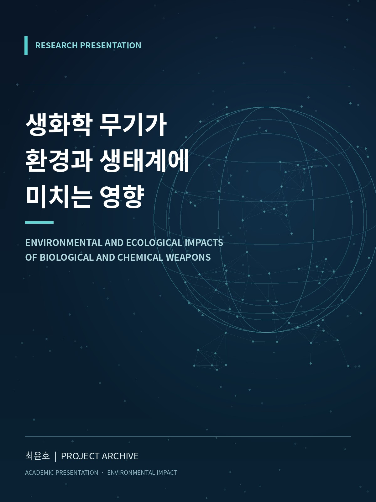
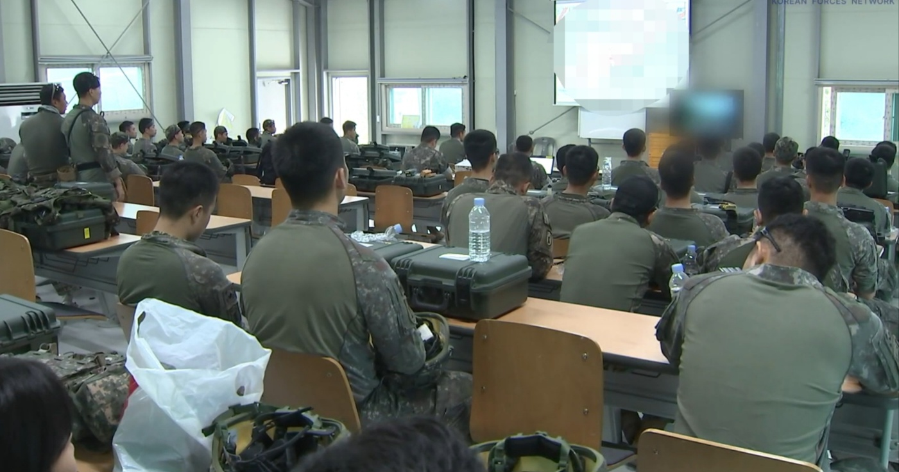
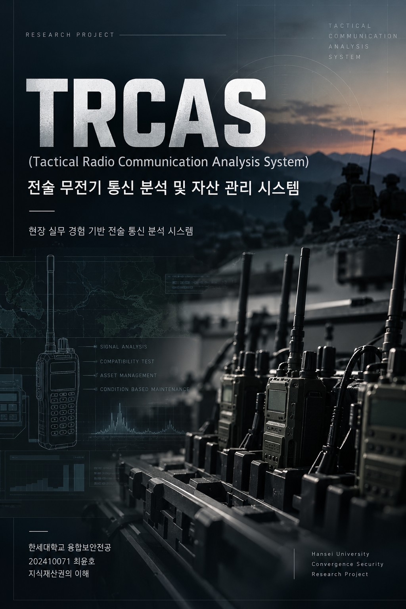
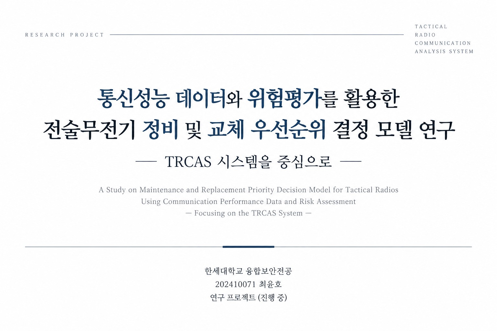

PROJECT
연구 및 프로젝트 수행 기록
1. 생물, 화학 무기와 기후위기의 상관관계 연구
진행 상태 : 완료
프로젝트 유형 : 학술 소논문 연구
수행 기간 : 약 7일

연구 목적
생물, 화학무기의 개발과 발전, 사용 과정에서 발생한 피해를 역사적 사례를 통해 분석하고, 기후 및 환경에 미치는 영향과 미래의 잠재적 위험을 고찰하고자 함.
주요 연구 내용
- 과거 생물, 화학무기의 개발 및 사용 사례 조사
- 역사적 인명 피해와 환경적 영향 분석
- 무기 기술 발전에 따른 위험 변화 가능성 검토
- 미래 피해에 관한 가설 설정 및 전망
연구 결론
과거 피해 사례를 바탕으로, 미래 생물, 화학무기 기술이 더욱 고도화될 경우 피해 규모와 양상이 심화될 가능성이 있다는 가설을 제시함.
2. 장병 중심 도시지역 전투 정예화 프로젝트
진행 상태 : 완료
프로젝트 유형 : 군 교육, 훈련 프로젝트
수행 기간 : 약 2개월

프로젝트 목적
상대적으로 복무 기간이 짧은 병사들을 대상으로 제한된 기간 안에 도시지역 전투 역량을 향상시킬 수 있는지 검토하고, 직접 교육, 훈련을 통해 그 가능성을 확인하고자 함.
주요 수행 내용
- 선임 교관을 포함한 교관진의 일원으로 참여
- 장병 대상 교육 진행 및 직접 시범 실시
- 약 2개월간 교육, 훈련 과정에 참여
- 교육 종료 후 정예 전투원 선발 과정에 참여
프로젝트 결과
약 2개월간의 교육과 훈련을 통해 병사 중심의 정예 도시지역 전투원을 선발함.
3. TRCAS 전술무전기 상태평가 시스템
진행 상태 : 완료
프로젝트 유형 : 시스템 구상 및 연구
수행 기간 : 약 1개월

프로젝트 목적
기존 전술무전기 예방정비 과정에서 발생하는 점검의 비효율성과 장비 간 통신 불량 문제를 개선하기 위한 상태평가 시스템을 구상함.
주요 연구 내용
- 다수 전술무전기의 점검 자동화 방안 연구
- 송수신 상태 및 RSSI 데이터 활용
- 장비 간 교차 통신 점검 기능 구상
- 점검 결과 기록 및 상태 변화 분석
- 장비 상태에 따른 정비 권고 방안 연구
프로젝트 결과
전술무전기의 통신상태를 체계적으로 평가하고 정비 의사결정에 활용할 수 있는 TRCAS 시스템의 개념과 주요 기능을 정리함.
4. TRCAS 기반 위험평가 및 정비, 교체 우선순위 결정 모델 연구
진행 상태 : 진행 중
프로젝트 유형 : 위험관리 및 경제적 효율성 연구

연구 목적
TRCAS를 통해 확보할 수 있는 통신상태 데이터를 군의 장비 정비 및 교체 의사결정에 활용하고, 제한된 예산에서 위험 감소와 비용 효율성을 높일 수 있는 방안을 연구함.
기대 효과
- 합리적인 정비, 교체 의사결정 지원
- 장비 고장으로 인한 작전 수행 위험 감소
- 기존 장비의 효율적인 운용
- 군 예산의 효율적인 배분 및 비용 절감 가능성 검토
- 데이터 기반 예방정비 체계 개선